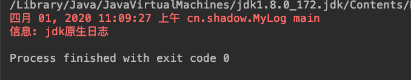
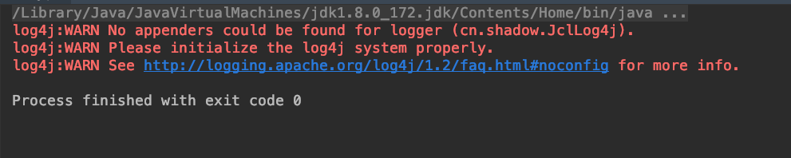
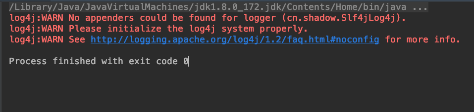
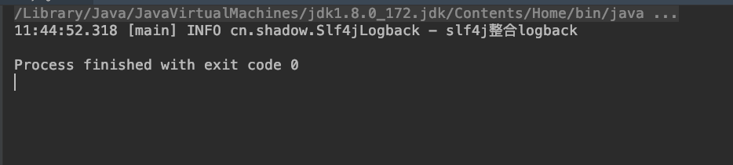
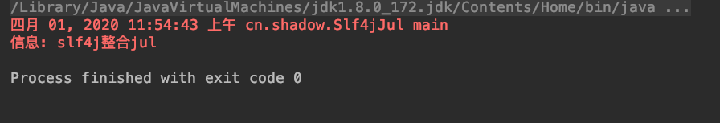
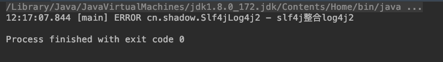

Log日志体系
commons-logging.jar、log4j.jar、sl4j-api.jar、logback.jar
背景/发展史
- log4j（作者Ceki Gülcü）出来时就等到了广泛的应用（注意这里是直接使用），是Java日志事实上的标准，并成为了Apache的项目
- Apache要求把log4j并入到JDK，SUN拒绝，并在jdk1.4版本后增加了JUL（java.util.logging）
- 毕竟是JDK自带的，JUL也有很多人用。同时还有其他日志组件，如SimpleLog等。这时如果有人想换成其他日志组件，如log4j换成JUL，因为api完全不同，就需- 要改动代码。
- Apache见此，开发了JCL（Jakarta Commons Logging），即commons-logging-xx.jar。它只提供一套通用的日志接口api，并不提供日志的实现。很好的- 设计原则嘛，依赖抽象而非实现。这样应用程序可以在运行时选择自己想要的日志实现组件。
- 这样看上去也挺美好的，但是log4j的作者觉得JCL不好用，自己开发出slf4j，它跟JCL类似，本身不替供日志具体实现，只对外提供接口或门面。目的就是为了替- 代JCL。同时，还开发出logback，一个比log4j拥有更高性能的组件，目的是为了替代log4j。
- Apache参考了logback,并做了一系列优化，推出了log4j2
JUL jdk原生日志
import java.util.logging.Logger; |

JCL commons-logging
默认的LogFactory实现使用以下发现过程来确定应使用的Log实现类型（在找到第一个肯定匹配项时（按顺序），该过程终止）：
- 查找该工厂的名为org.apache.commons.logging.Log的配置属性 （为了向后兼容该API的1.0之前的版本，还请参考org.apache.commons.logging.log属性 ）。
可以通过Java代码显式设置配置属性，但是更常见的是通过在类路径中放置一个名为commons-logging.properties的文件来进行设置。当存在这样的文件时，属性文件中的每个条目都将成为LogFactory的“属性”。如果类路径中有多个此类文件，则1.1之前的commons-logging版本仅使用找到的第一个文件。从版本1.1开始，每个文件都可以定义优先级密钥，并且使用优先级最高的文件（没有优先级定义表示优先级为零）。当多个文件具有相同的优先级时，将使用找到的第一个文件。
建议在commons-logging.properties文件中定义此属性，以明确选择Log实现。
- 查找一个名为org.apache.commons.logging.Log的系统属性 （为了向后兼容此API的1.0之前的版本，还请参考系统属性 org.apache.commons.logging.log）。
- 如果Log4J日志记录系统在应用程序类路径中可用，请使用相应的包装器类（Log4JLogger）。
- 如果应用程序在JDK 1.4系统上执行，请使用相应的包装器类（Jdk14Logger）。
- 退回到默认的简单日志记录包装器（SimpleLog）。
jcl整合log4j
compile group: 'commons-logging', name: 'commons-logging', version: '1.2' |
import org.apache.commons.logging.Log; |

Slf4j
slf4j与其他日志框架动态绑定

slf4j整合log4j
compile group: 'org.slf4j', name: 'slf4j-api', version: '1.7.30' |
import org.slf4j.Logger; |

slf4j整合logback
compile group: 'org.slf4j', name: 'slf4j-api', version: '1.7.30' |
import org.slf4j.Logger; |

slf4j整合jul
compile group: 'org.slf4j', name: 'slf4j-api', version: '1.7.30' |
import org.slf4j.Logger; |

slf4j整合log4j2
compile group: 'org.slf4j', name: 'slf4j-api', version: '1.7.30' |
import org.slf4j.Logger; |

slf4j整合jcl
compile group: 'org.slf4j', name: 'slf4j-api', version: '1.7.30' |
slf4j桥接旧版API

其实总的来说，无论就是以下几种情况
- 你在用JCL
使用jcl-over-slf4j.jar适配 - 你在用log4j
使用log4j-over-slf4j.jar适配 - 你在用JUL
使用jul-to-slf4j.jar适配
日志框架在spring中使用
让Spring统一输出
这就是为了对slf4j的适配做一个例子说明。
Spring是用JCL作为日志门面的，那我们的应用是slf4j + logback，怎么让Spring也用到logback作为日志输出呢？这样的好处就是我们可以统一项目内的其他模块、框架的日志输出（日志格式，日志文件，存放路径等，以及其他slf4j支持的功能）
很简单，就是加入jcl-over-slf4j.jar就好了。
compile group: 'org.slf4j', name: 'jcl-over-slf4j', version: '1.7.30' |
spring5与spring4日志区别
永远不要尝试将SLF4J适配器（log4j-to-slf4j-2.x.jar）与SLF4J桥接器（log4j-slf4j-impl-2.x.jar）一起使用，因为这会导致事件之间不断地路由SLF4J和Log4j 2。
spring4 使用jcl
spring5 使用spring-jcl
final class LogAdapter { |
spring boot 日志
springboot 默认使用slf4j+logback
compile group: 'org.springframework.boot', name: 'spring-boot-starter-logging', version: '2.1.10.RELEASE' |

springboot 启用slf4j+log4j2
compile group: 'org.springframework.boot', name: 'spring-boot-starter-log4j2', version: '2.1.10.RELEASE' |